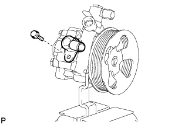
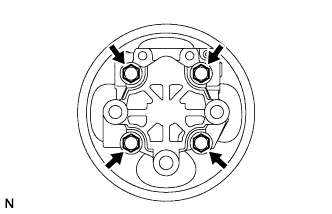
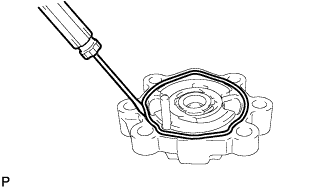
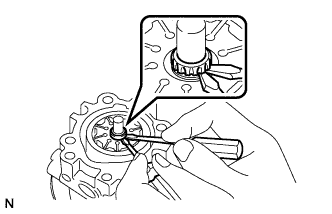
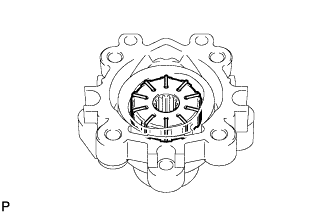
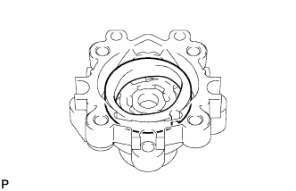
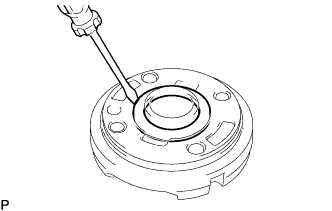
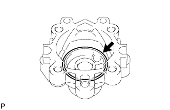
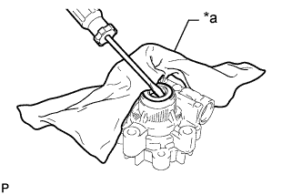

ЛОПАСТНОЙ НАСОС (для моделей с двигателем 1GR-FE) > РАЗБОРКА |
| 1. ЗАКРЕПИТЕ ЛОПАСТНОЙ НАСОС В СБОРЕ |
 |
С помощью SST зафиксируйте лопастной насос в тисках.
| 2. СНИМИТЕ ШТУЦЕР КАНАЛА ВСАСЫВАНИЯ |
|  |
Выверните болт и отсоедините штуцер впускного отверстия от лопастного насоса.
С помощью отвертки снимите кольцевое уплотнение со штуцера впускного отверстия.
| 3. СНИМИТЕ ЗАДНИЙ КОЖУХ ЛОПАСТНОГО НАСОСА |
|  |
Выверните 4 болта и снимите задний кожух лопастного насоса с переднего кожуха лопастного насоса.
|  |
С помощью отвертки снимите кольцевое уплотнение с заднего кожуха лопастного насоса.
| 4. СНИМИТЕ ВАЛ ЛОПАСТНОГО НАСОСА СО ШКИВОМ |
|  |
С помощью 2 отверток снимите пружинное стопорное кольцо с вала лопастного насоса.
Снимите вал лопастного насоса со шкивом.
| 5. СНИМИТЕ РОТОР ЛОПАСТНОГО НАСОСА |
|  |
Снимите 10 пластин лопастей лопастного насоса.
Извлеките ротор лопастного насоса из переднего кожуха лопастного насоса.
| 6. СНИМИТЕ СТОПОРНОЕ КОЛЬЦО ЛОПАСТНОГО НАСОСА |
|  |
Снимите стопорное кольцо с переднего кожуха лопастного насоса.
| 7. СНИМИТЕ ПЕРЕДНЮЮ ЗАЩИТНУЮ ШАЙБУ ЛОПАСТНОГО НАСОСА |
 |
Снимите переднюю боковую защитную шайбу с переднего кожуха лопастного насоса.
|  |
С помощью отвертки снимите кольцевое уплотнение с передней защитной шайбы.
|  |
Снимите кольцевое уплотнение с переднего кожуха лопастного насоса.
| 8. СНИМИТЕ САЛЬНИК КОЖУХА ЛОПАСТНОГО НАСОСА |
|  |
Извлеките сальник с помощью отвертки и куска ветоши.
| *a | Ткань |